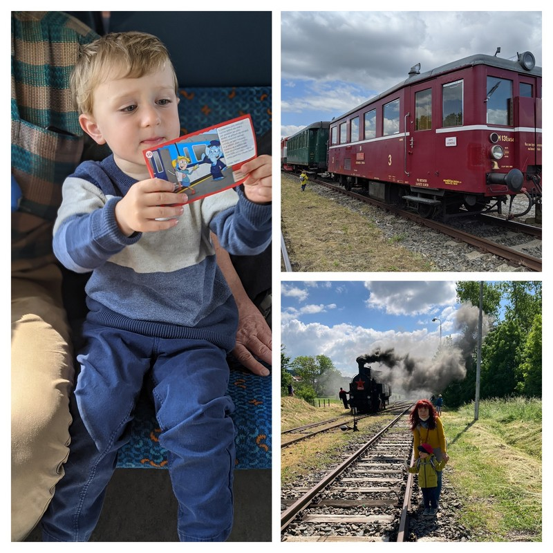
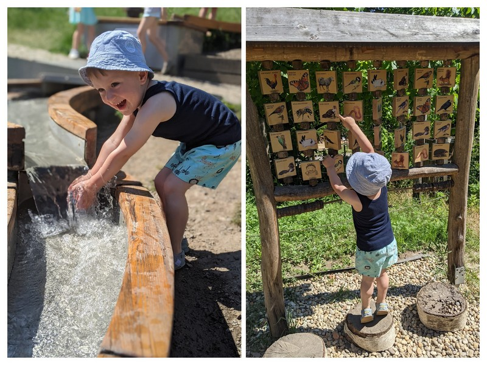
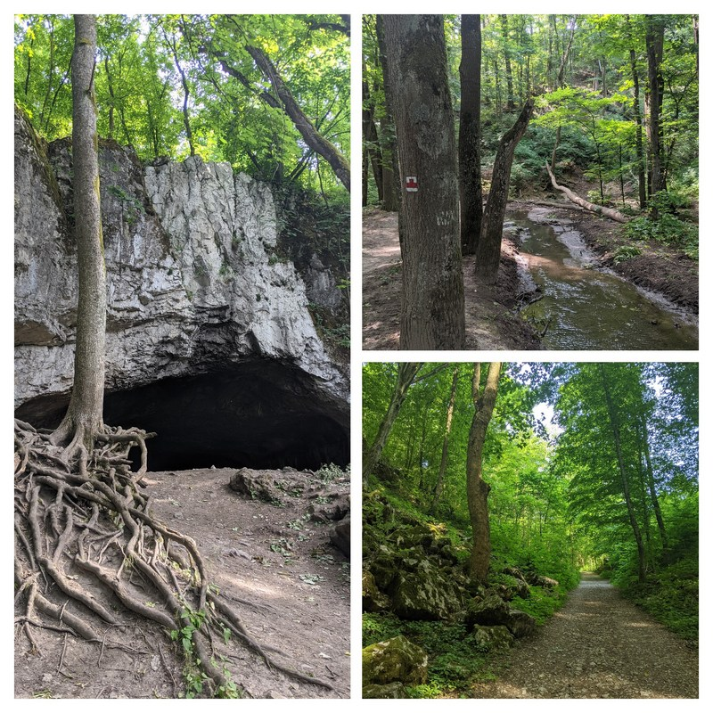
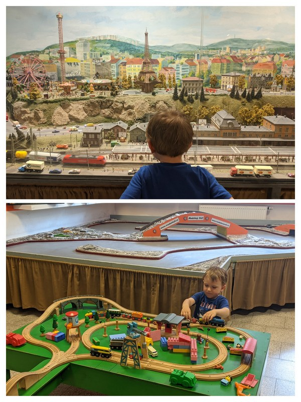
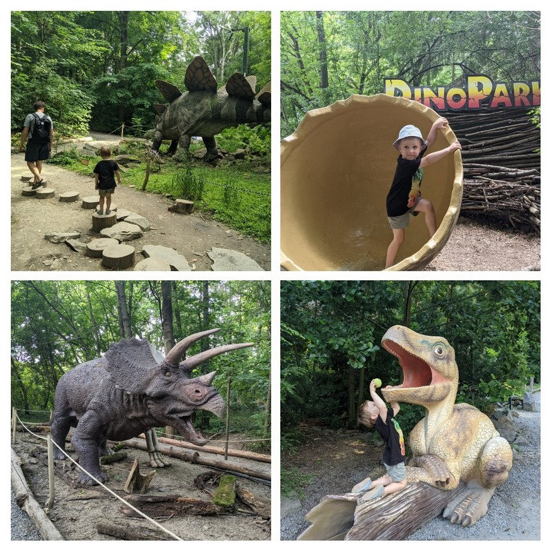
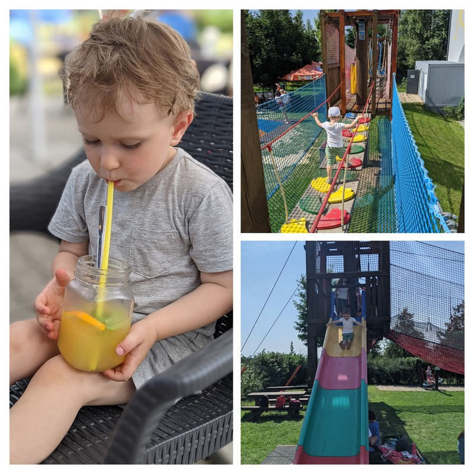
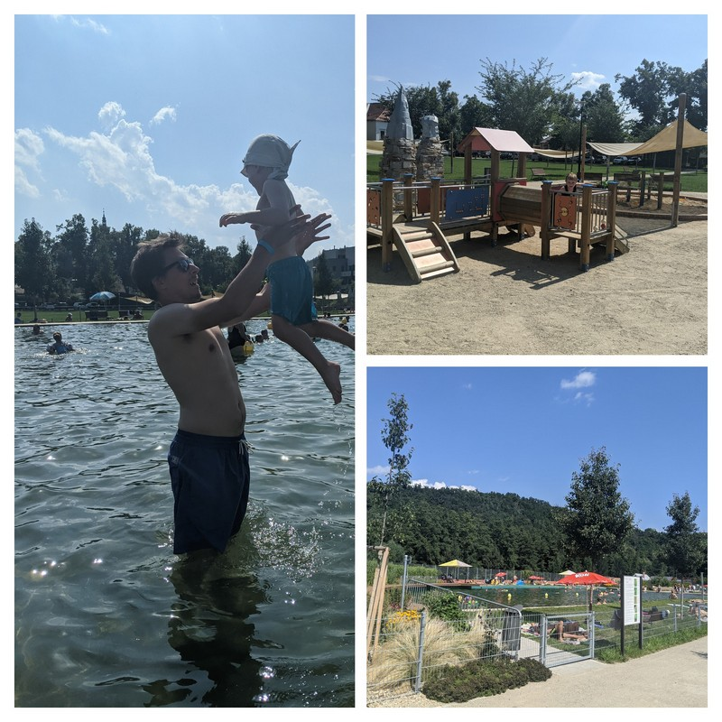

Které jiné období přeje výletům tolik, jako léto? Ve spojení s rozvolňováním proticovidových opatření se možnosti toho, co podnikat, zase o něco rozšířily a naše prázdninové dny byly plné hezkých zpestření. Však jsme se taky rozhodli si tohle léto pořádně užít, než nám se zářím započne zase nová životní etapa a nové povinnosti…
Jízda parním vláčkem u příležitosti 140. výročí trati Kroměříž - Zborovice
Tuhle událost jsem měla v hledáčku už pěkně dlouho a bylo mi jasné, že nás - respektive Oliho - nesmí minout. Přece jen parní mašinka Kroměříží nejezdí každý den :-) Dle mého očekávání byl O. nadšený, ale ještě větší ohlas než jízda parním Velkým Bejčkem u našeho malého šotouše sklidilo to, že ze Zdounek jsme se zpátky svezli modrým Regiosharkem a O. dostal od pana průvodčího dětskou jízdenku :-) V Kroměříži na nádraží pak probíhal ještě doprovodný program, bylo tam k prohlédnutí i svezení několik dalších historických i moderních mašinek a nakoukli jsme také do zdejšího malého železničního muzea.

Otevřená zahrada
Je to s podivem, ale do Otevřené zahrady, která už mi byla tolikrát ze všech stran doporučována a kterou máme téměř u nosu, jsem se s Olim vydala poprvé až tohle léto. A rozhodně jsme nebyli zklamaní - už jen zdejší vodní prvky (nezapomněla jsem přibalit s sebou plastový parníček :-) by vystačily na pořádnou dětskou spokojenost, ale když připočtu ještě ovečky a králíčky, hřiště a kavárnu se zmrzlinkou, úspěch byl prostě zaručen :-)

Jeskyně Pekárna a Hostěnické propadání
… aneb takový ten výlet, kdy přemýšlíte, kam se schovat před všudypřítomným vedrem, a napadne vás - no jasně, jeskyně :D! Pravěká jeskyně Pekárna je jednou z nejznámějších jeskyní Moravského krasu a její prozkoumávání je vskutku dobrodružnou záležitostí (baterku s sebou!). Jedná se o významné archeologické naleziště – v minulém století se zde našly pravěké jeskynní malby i kosterní pozůstatky. K jeskyni vede několik cest - my jsme se nakonec rozhodli zaparkovat v Hostěnicích a vydat se po žluté značce kolem Hostěnického propadání, což je další zajímavý krasový jev v této lokalitě, kde Hostěnický potok mizí ve vápencovém komíně a jeho voda se propadá do Ochozské jeskyně.

Modelový svět na Josefské
Tohle sice není výlet úplně do daleka, ale myslím, že chybět by tu tento tip rozhodně neměl. Snad omluvíte lehkou monotematičnost, ale mašinky se prostě staly neoddělitelnou součástí našich životů :D a Modelový svět jedním z našich nejoblíbenějších letních cílů. Výhodou je, že vstupenka je celodenní, takže když vás přepadne hlad, můžete návštěvu proložit třeba dobrým obědem a pak se sem zase vrátit. Najdete tu sice jen dvě místnosti, ale všichni milovníci vláčků se tu zabaví na hooodně dlouho.

Dinopark a ZOO park Vyškov
Oli nepatří k takovým těm dětem s fascinací dinosaury, které znají všechny ty nevyslovitelné názvy a dokážou je od sebe na první pohled rozeznat, nicméně párkrát jsme teď na dinosaury v různém kontextu narazili a O. se našeho nápadu na výlet do Dinoparku okamžitě chytnul, tak jsme se rozhodli vyrazit. Výhodou je, že vstupenka do Dinoparku (na náš vkus poměrně drahá) v sobě již zahrnuje i vstupné do ZOO, takže máte vlastně dvě atrakce v jednom. Vyškovská ZOO není nijak velká, hravě ji za hodinu projdete, takže se dítě mezitím neunaví. Zaměřená je spíše na domácí zvířata, ale najdete tu i pár exotických - velbloudy, opičky, lemury či divokého psa Dingo. Velkou výhodou je, že zvířátka si můžete prohlédnout opravdu zblízka a v části zvané “Babiččin statek” se můžete mezi ovečkami či kozami přímo procházet, nakrmit si je či pohladit. Mně tato vychvalovaná atrakce zas tolik nenadchla, bylo to tu na mě moc “rohaté” a smrduté :D, ale věřím, že jsou děti, které blízký kontakt se zvířátky uvítají.
Zajímavým zpestřením (obzvlášť pro Oliho) byl fakt, že Dinopark je od ZOO parku vzdálen asi 15 minut a tudíž zde pro návštěvníky jezdí vláček “Dinoexpress”, který Vás skrz centrum Vyškova dopraví až za brány Dinoparku. Vláček jezdí cca každých 20 minut. Dinopark je rovněž rozlohou poměrně malý, ale na každém rohu tu máte hřiště či nějakou jinou tematickou atrakci (které ve výsledku naše dítě bavily víc než samotní dinosauři - typické :D), takže na jeho kompletní projití bych doporučila vyhradit minimálně 2 hodiny. Někteří dinosauři jsou pohybliví a vydávají zvuky, což je docela sranda :D Celkově hodnotím tento výlet do druhohor kladně :-)

Kamenný vrch a “Lanáček”
Kamenný vrch se pro nás stal jedním z objevů tohoto léta a rádi se sem vracíme i teď na podzim. Mezi paneláky tu najdete úžasnou oázu zeleně, hřiště pro všechny věkové kategorie, pump trackovou dráhu a hlavně parádní lanový park pro děti - “Lanáček”. Dráha je určena pro děti od 3 let, což je asi celkem adekvátní, protože mladší děti by mohly mít s některými překážkami problém a rodičům je dovoleno vše pozorovat pouze ze země, na samotnou lanovou dráhu vstupovat nesmí. Vstupné pro děti nad 90cm činí 90 Kč a platí na celý den - tzn. můžete kdykoliv během dne odejít a pak se opět vrátit, což je super. Krom opičí dráhy je tu také houpačka, obrovská trampolína a posezení pro rodiče. V areálu najdete i fajn kavárničku, kam si můžete zajít třeba pro sladkou tečku.

Biotop Oslavany
Pokud jste stejně jako my otrávení z přecpaných brněnských koupališť a nevadí vám zajet si za osvěžením o kousek dál, určitě můžeme doporučit biotop v Oslavanech, který nás naprosto nadchnul. I v parném víkendovém dni tam rozhodně nebyla hlava na hlavě, voda byla krásně čistá a hlavně je koupaliště super pro malé děti. Najdete tu jak brouzdaliště, tak vodní prvky na hraní (lodičky s sebou) a v hlavním bazéně je bójkami krásně vyznačená část, kam ještě děti dosáhnou a kde už začíná hloubka. Vedle biotopu se navíc nachází naprosto parádní hřiště s tobogánovou skluzavkou a dalšími originálními prvky, které jen tak někde na hřišti neuvidíte. Za nás velká spokojenost a určitě jsme tu nebyli naposledy.
